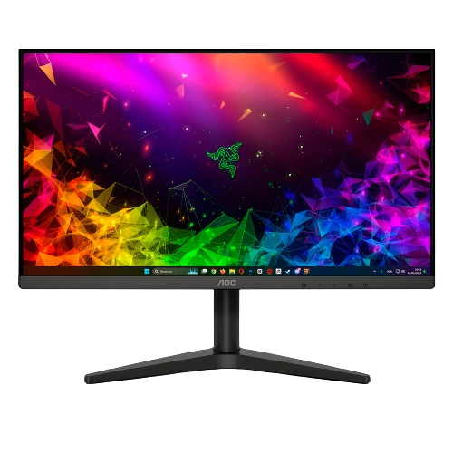

Monitor para PC AOC 22B1HM5 21,5” LCD/LED - Widescreen Full HD HDMI VGA
Informações do Produto
Monitor para PC AOC 22B1HM5 21,5” LCD/LED Com o Monitor AOC 22B1HM5 você poderá desfrutar de conteúdos multimídia com mais imersão e aumentar sua performance em qualquer tarefa. Super completo e moderno, ele possui tela widescreen LCD/LED de 21,5" com resolução full HD e painel VA, proporcionando imagens incríveis com detalhes muito nítidos. Os cristais líquidos alinhados verticalmente proporcionam cores mais fortes e uniformes. Seu design elegante e sofisticado conta com bordas ultrafinas que proporcionam ainda mais imersão. Tenha ampla versatilidade para inclinar e ajustar a posição do monitor para encontrar o seu modo ideal de uso. As tecnologias Flicker-free e Low Blue Mode são importantes para reduzir a cintilação e a emissão de luz azul, protegendo a visão sem sacrificar a qualidade das imagens. Além disso, ele também oferece outros benefícios como conexões HDMI e VGA, frequência de atualização de 75Hz e tempo de resposta de 6,5ms.
Especificações Técnicas
Marca: AOC
Referência: 22B1HM5
Modelo: 22B1HM5
Tamanho da Tela: 21,5"
Tecnologia: LCD/LED
Tipo de Painel: VA
Formato da Tela: Widescreen
Resolução: Full HD
Resolução Máxima: 1920x1080
Frequência de Atualização: 75Hz
Tempo de Resposta: 6,5ms
Características: - Adaptive-Sync - Low Blue Mode - Flicker Free
Conexões: - 1 Entrada VGA - 1 Entrada HDMI - 1 Saída de áudio
Posição da Tela: Horizontal
Recursos de imagem - Brilho: 250 cd/m²
Recursos de imagem - Contraste: 20.000.000:1
Recursos de imagem - Número de cores: Maior que 16 milhões
Recursos de imagem - Pixel Pitch: 0,2493 x 0,241mm
Ângulo de Visão: 178°
Inclinação: 20°
Base: Removível
Furação Padrão: VESA
Peso aproximado - Peso do produto: 2,2kg
Peso aproximado - Peso do produto com embalagem: 3,1kg
Voltagem: Bivolt
Cor: Preto
Dimensões do Produto: - Largura: 49,2cm - Altura: 28,4cm - Profundidade: 3,7cm
Dimensões do Produto com Embalagem: - Largura: 55cm - Altura: 37cm - Profundidade: 12cm
Prazo de Garantia: 01 ano (3 meses de garantia legal e mais 9 meses de garantia especial concedida pelo fabricante)
Conteúdo da Embalagem: - 1 Monitor - Cabo de energia - Cabo HDMI - Certificado de garantia
Comentários

Comprei para usar como segunda tela. Depois de instalado, percebi que é um monitor gamer, e um ótimo monitor. Melhor monitor custo benefício!

O monitor tem excelente imagem e chegou no prazo combinado.

O produto é incrível tela ótima pra trabalhar, nao possui áudio mas ja tem informando nas descrições, so coloquei aqui pq nas imagens parece por conta dos buraquinhos que possuí atrás mas ele é so a tela se precisar de um som precisa adaptar com um auto falante externo. Mas é muito bom o monitor. E pra configurar é bom baixar os drivers no computador é mais fácil pra configurar a imagem. Ótimo custo benefício.
O monitor é excelente, porém ele começou a piscar na tela uma luz verde. Tentei solicitar troca, porém diz que não é mais possível. Fiquei bem decepcionado.